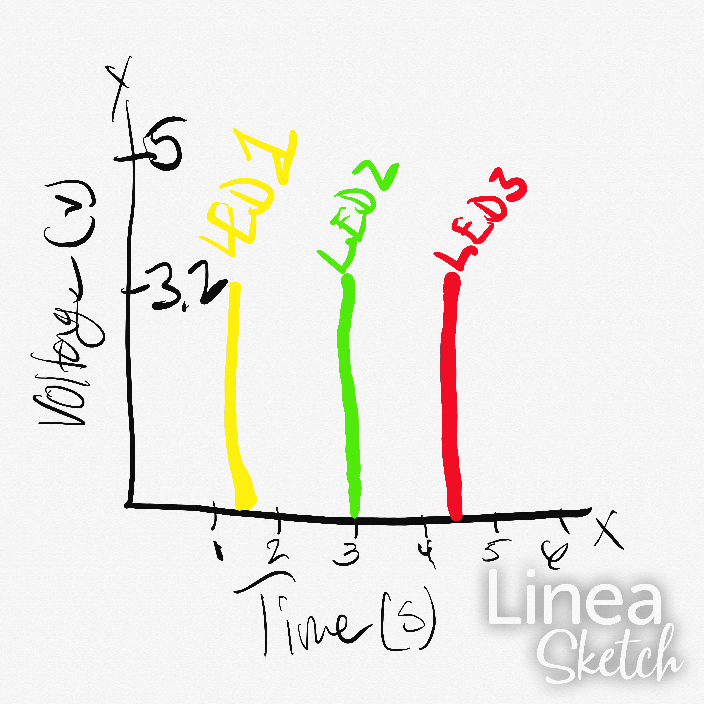

Schematic view above shows the connections of 3 LED's and 3 resistors (each 220 ohm) to 3 different pins on the arduino board and back to ground.
To the left is a gif of my operating circuit where all 3 LED's blink independently.
See below all the documentation for Blink!
// the setup function starts once the arduino is powered or reseted
void setup()
{
// initializing digital pins LED_BUILTIN as an output.
pinMode(10, OUTPUT);
pinMode(11, OUTPUT);
pinMode(12, OUTPUT);
}
// the loops runs forever as long as board is powered
void loop()
{
digitalWrite(10, HIGH); // LED #1 turns on
digitalWrite(11, LOW); // LED #2 stays off
digitalWrite(12,LOW); // LED #3 stays off
delay(1500); // Wait for 1.5 seconds
digitalWrite(11,HIGH); // LED #2 turns on
digitalWrite(12,LOW); // LED #3 stays off
digitalWrite(10,LOW); // LED #1 turns off
delay(1500); // Wait for 1.5 seconds
digitalWrite(12,HIGH); // LED #3 turns on
digitalWrite(10,LOW); // LED #1 stays off
digitalWrite(11,LOW); // LED #2 turns off
delay(1500); // wait for 1.5 seconds
}
Schematic view above shows the connections of 3 LED's and 3 resistors (each 220 ohm) to 3 different pins on the arduino board and back to ground.
Circuit view above shows the schematic in physical form.
1: Draw a graph where the X axis is time and the Y axis is voltage across the LEDs. Draw a line for each of your 3 LEDs.
2: How many LEDs could you blink independently with your Arduino? How much current would that draw?
Answer: The most LEDs that could blink indepently with my Arduino is 14 at a current of about 200mA. See my work below.

4: How fast do you need to blink your LEDs until you no longer can tell that they are blinking?
Answer: I could not tell if they were blinking at a speed of 30ms